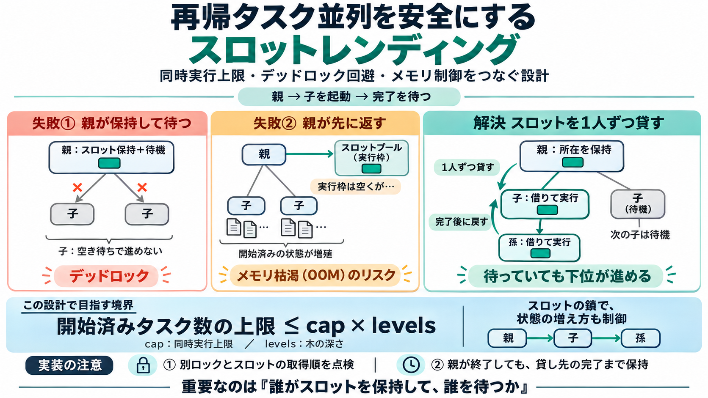

Control Processing Concurrency in CocoIndex
When a limit is reached, CocoIndex pauses new processing until some existing work completes. This keeps throughput high …

When a limit is reached, CocoIndex pauses new processing until some existing work completes. This keeps throughput high …
How CocoIndex v1 caps concurrent processing components with one app-level limit, lends slots to nested mounts, and adds …
✅ Always use context managers (`async with semaphore`) ✅ Handle exceptions properly to prevent semaphore leaks ✅ S…
The preferred way to use a Semaphore is an `async with` statement: ``` sem = asyncio. Semaphore(10)# ... later…
When the counter of `asyncio.Semaphore` is zero, other tasks that need the lock will wait. When calling the release meth…